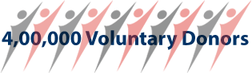
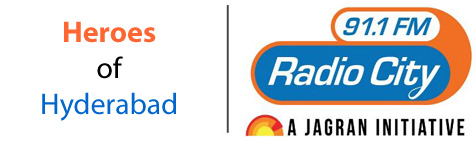
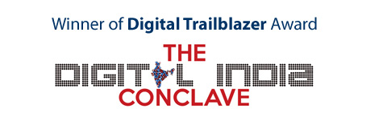
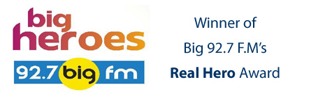
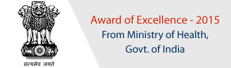
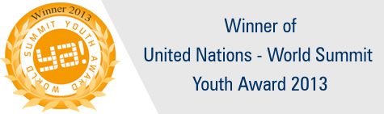
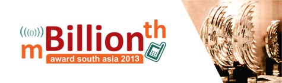
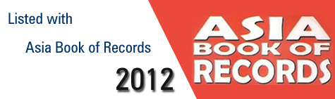

In a journey of more than 14 years from
14th Nov 2005 till today, F2S team has seen many ups
and downs. Here are a few defining moments which have
in a way recognised our efforts and strengthened our
determination.
- Crossed the benchmark of 3,00,000 donors

It was dual celebration for KRP on
14th November 2019, one, it was F2S 14th anniversary
and secondly, we crossed the benchmark of 4,00,000
donors.
It feels great for an organisation which started
with 5 people to have reached 4,00,000 people today.
- Heroes of Hyderabad Award to KRPD founder Mr. Shareef

KRPD founder Mr. Shareef has honoured with "Heroes of Hyderabad Award" by Radio City 91.1 F.M. We dedicate this recognisation to all the 2,00,000 voluntary donors who register with KRPD and saving lives.
- Limca Book of Records 2017 as India's Largest Voluntary Blood Donors website
We are happy to share with you yet another proud
moment of Friendstosupport as we listed with Limca Book of Records 2017 as India's Largest Voluntary Blood Donors website. We dedicate this recognisation to all the 2,00,000 voluntary donors who register with KRPD and saving lives.
- Digital Trailblazer Award 2016

On the occasion of The Digital India conclave 2016, KRPD honoured with "Digital Trailblazer Award" from India Today and, Government of Andhra Pradesh for promoting voluntary blood donation using digital technology and social media.
- Limca Book of Records 2016 as India's Largest Voluntary Blood Donors website
We are happy to share with you yet another proud
moment of Friendstosupport as we listed with Limca Book of Records 2016 as India's Largest Voluntary Blood Donors website. We dedicate this recognisation to all the 2,00,000 voluntary donors who register with KRPD and saving lives.
- Real Hero Award to KRPD founder Mr. Shareef

On the occasion of Independence Day, KRPD founder Mr. Shareef has honoured with "Real Hero Award" by Big 92.7 F.M. We dedicate this recognisation to all the 2,00,000 voluntary donors who register with KRPD and saving lives.
- "Award of Excellence - 2015" from Ministry of Health and Family Welfare, Government of India

On the occasion of World Blood Donors Day, i.e. 14 June 2015, KRPD honoured with "Award of Excellence" from the Ministry of Health and Family Welfare, Government of India for promoting voluntary blood donation using digital technology and social media.
- Limca Book of Records 2015 as India's Largest Voluntary Blood Donors website
We are happy to share with you yet another proud
moment of Friendstosupport as we listed with Limca Book of Records 2015 as India's Largest Voluntary Blood Donors website. We dedicate this recognisation to all the 1,50,000 voluntary donors who register with KRPD and saving lives.
- Limca Book of Records 2014 as India's Largest Voluntary Blood Donors website
We are happy to share with you yet another proud
moment of Friendstosupport as we listed with Limca Book of Records 2014 as India's Largest Voluntary Blood Donors website. We dedicate this recognisation to all the 1,50,000 voluntary donors who register with KRPD and saving lives.
- Winner of World Summit Youth Award - 2013

We are happy to share with you yet another proud
moment of Friendstosupport as we won prestigious World Summit Youth Award (WSYA) 2013 in the category of Fight
Hunger, Poverty & Disease.
KRPD mobile applicaitons has selected as one of the best projects from 2500 projects from across the world.
The award is a recognition for young people who use Internet and Mobiles to get Action on United Nations Millennium Development goals.
- Limca Book of Records 2013 as India's Largest Voluntary Blood Donors website
We are happy to share with you yet another proud
moment of Friendstosupport as we listed with Limca Book of Records 2013 as India's Largest Voluntary Blood Donors website. We dedicate this recognisation to all the 1,00,000 voluntary donors who register with KRPD and saving lives.
- mBillionth South Asia Award - 2013

In July 2013, Friendstosupport was adjudged as
the winner of "Best digital content used
in the development of Society".
- Asia Book of Records as World's Largest Voluntary Blood Donors website

We are happy to share with you yet another proud
moment of Friendstosupport as we listed with Asia Book of Records as World's Largest Voluntary Blood Donors website. We dedicate this recognisation to all the 1,00,000 voluntary donors who register with KRPD and saving lives.
|
|